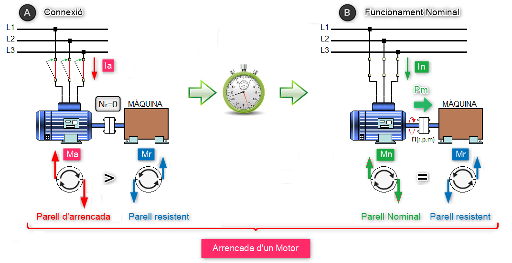
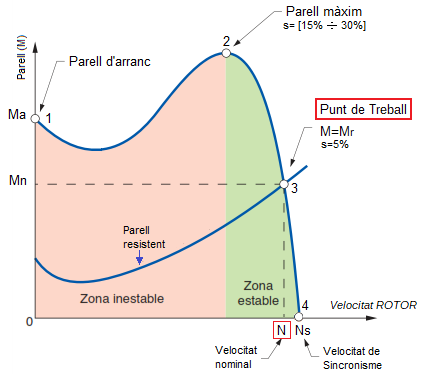
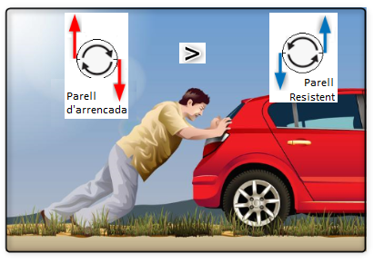
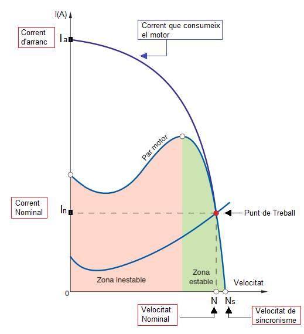
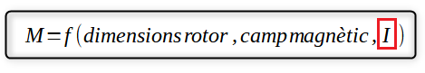

Corbes de Parell i de Corrent
Arrencada d'un Motor d'Inducció
Els valors de parell generat (M) i intensitat (I) consumida per un motor no són sempre els indicats en la placa de característiques del motor (valors nominals). Hi ha un període de temps, durant l'arrencada d'un motor d'inducció, on aquests valors varien entre:
- Valors d'arrencada (Ia i Ma): són els valors de parell generat (Ma) i intensitat consumida (Ia) pel motor en l'instant en que es produeix la connexió a la xarxa elèctrica (velocitat del rotor Nr=0).
- Valors nominals (In i Mn): són els valors de parell generat (Mn) i intensitat consumida pel motor (In) quan aquest assoleix la velocitat nominal (Nr=n) o, dit d'una altra manera, quan el parell motor s'iguala al parell resistent (Mn=Mr)

El procés d'arrencada comença sempre que es compleixi la següent condició: el parell en el moment de la connexió del motor a la xarxa elèctrica (Ma) ha de ser superior al parell resistent de la màquina (Mr).
Les corbes que representen els valors de parell (M) i de intensitat (I) consumida pel motor a mesura que aquest s'accelera des del repòs (Nr=0) fins assolir la velocitat nominal (Nr=n) reben el nom de corba de parell i corba d'intensitat.
L'arrencada d'un motor elèctric és l'interval de temps que transcorre des que es connecta el motor a la xarxa elèctrica (n=0, repòs) fins que aquest s'accelera i aconsegueix la seua velocitat nominal (n).
Corba de Parell
La corva de parell és la representació gràfica del Parell Motor (M) durant l'arrencada del motor.

Els punts més significatiu d'aquesta gràfica són els següents:
- Punt 1 - Parell d'arrencada (Ma): es produeix en el moment inicial, just quan es dóna tensió elèctrica al motor i el motor té una velocitat de gir nul·la (Nr=0). i a girar, el parell d'arrencada ha de ser superior al Parell Resistent de la màquina (Ma>Mr).
Per entendre perquè és necessari que el parell motor sigui superior al parell resistent en el instant inicial utilitzarem l'exemple d'intentar moure un cotxe que està aturat. En aquesta situació la persona que empenta el cotxe és el motor i el cotxe és la màquina a moure o parell resistent.

Qualsevol persona que s''hagi trobat en aquesta situació ha notat que inicialment hem de fer un gran esforç per començar a moure el cotxe, però que una vegada que les rodes comencen a girar i el cotxe a desplaçar-se notem que l'esforç que estem fent també disminueix. L'explicació és molt senzilla: en el moment inicial hem de vèncer el parell resistent que té el cotxe més la inèrcia. Una vegada que el cotxe es mou a velocitat constant la inèrcia desapareix i únicament hem vèncer el parell resistent del cotxe.
- Punt 2-Parell Màxim: A partir de l'instant inicial, el motor comença a accelerar molt ràpidament, desenvolupant cada vegada un parell més gran, fins arribar al punt de parell màxim. En aquest punt el lliscament està comprés entre el 15% i el 30%.
- Punt 3- funcionament nominal: A partir del punt 2 el parell motor comença a disminuir, mentre que la velocitat continua augmentant fins que tots dos valors s'estabilitzen quan s'igualen el parell motor i el parell resistent (punt de treball). Si la velocitat del rotor del motor en el punt de treball és la nominal (Nr=n), direm que el motor es troba en el punt de funcionament nominal. En aquest punt el motor subministrarà tota la potencia mecànica o nominal i generarà el parell nominal (Mn),
- Punt 4 (Nr=Ns): És un punt on el motor d'inducció no pot arribar mai (principi de funcionament del motor d'inducció, Nr<Ns). En aquest punt el Parell motor es nul (M=0)
La inercia és la propietat que té un cos a oposar-se a un canvi en el seu estat de repòs.
Corba de corrent
La corba de corrent és la representació gràfica de la intensitat de corrent (I) que consumeix el motor durant la seua arrencada.

Per tal d'entendre millor aquesta corba hem de conèixer en primer lloc que hi ha una relació entre el parell motor i el consum de corrent:

En el moment inicial (arrencada del motor), quan el motor està parat i ha de vèncer el parell resistent i la inèrcia, el motor necessita generar un parell d'arrencada (Ma) molt elevat. Això provoca que el corrent consumit en aquest instant (Ia) sigui també molt elevat, de l'ordre de 5÷7 vegades el corrent nominal. Aquest valor va disminuint conforme la màquina s'accelera, estabilitzant-se en el punt de treball. Si la velocitat del rotor en el punt de treball és la nominal, direm que el motor consumeix de la xarxa el corrent nominal (In).
Licencia: licencia de software libre GPL